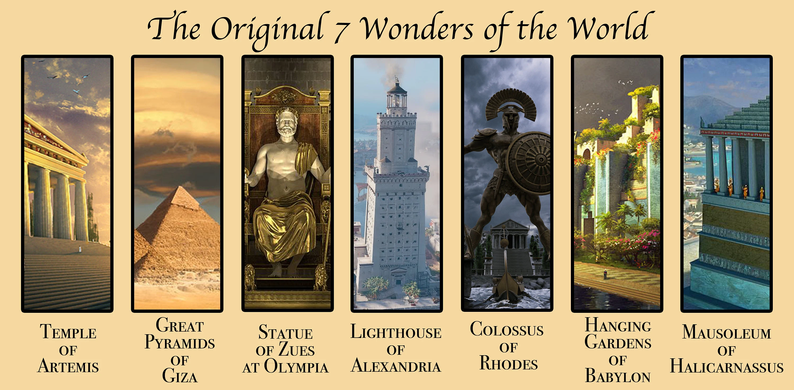

The Seven Wonders of the Ancient World were a collection of magnificent, largely Mediterranean architectural marvels celebrated by Hellenic travelers, including the Great Pyramid of Giza, Hanging Gardens of Babylon, Statue of Zeus at Olympia, Temple of Artemis, Mausoleum at Halicarnassus, Colossus of Rhodes, and Lighthouse of Alexandria. Only the Great Pyramid of Giza still stands today.